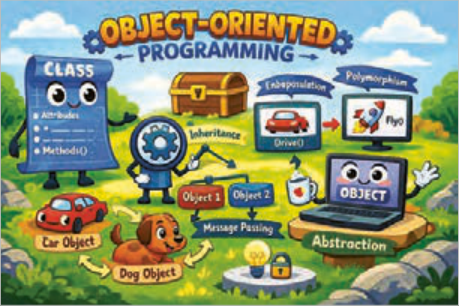
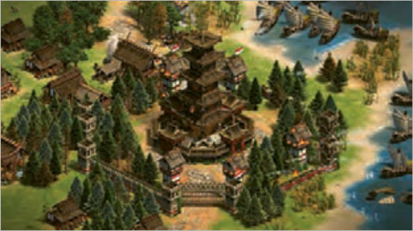

در دنیای واقعی، اشیای مشابه (مانند خودروها) با وجود تفاوت در مدل و رنگ، ویژگیها و رفتارهای مشترکی دارند. این موضوع به کدام مفهوم در برنامهنویسی مرتبط است؟
چرا با افزایش حجم برنامهها، نگهداری و اصلاح آنها دشوارتر میشود؟ چگونه میتوان ساختار برنامه را بهگونهای طراحی کرد که تغییرات، کمترین تأثیر را بر سایر بخشها داشته باشند؟
اگر بخواهید در یک بازی رایانهای، چند شخصیت با رفتارهای مشابه و ویژگیهای متفاوت طراحی کنید، استفاده از چه روشی در برنامهنویسی مناسبتر است؟
به چه دلیل در طراحی بسیاری از نرمافزارها و برنامههای بزرگ، از شیوه برنامهنویسی شیءگرا استفاده میشود؟
«کلاس» در برنامهنویسی به چه چیزی شباهت بیشتری دارد: نقشه یک ساختمان یا خود ساختمان؟
در پایان از هنرجو انتظار میرود
1 کلاسهای پایتون را با ویژگیها و متدهای مناسب، همراه با تعیین مقادیر پیشفرض و مدیریت دسترسی (public, protected, private) طراحی و پیادهسازی کند.
2 از کلاسها نمونه (Instance) بسازد و مقادیر و ویژگیهای این نمونهها را در طول اجرای برنامه به طور مؤثر تغییر دهد و مدیریت کند.
3 با استفاده از ارثبری برای ایجاد سلسله مراتب کلاسها، فراخوانی متدهای والد و بازنویسی آنها در کلاسهای فرزند مطابق با نیازهای برنامه اقدام نماید.
4 با استفاده از اصول OOP، کدی ماژولار، قابل فهم و با قابلیت استفاده مجدد (reusable) بنویسد که از تکرار کد جلوگیری کند.
5 درک اولیهای از نحوه عملکرد متاکلاسها و نقش آنها در تعریف و ساختار کلاسها پیدا کند.
6 مسائل برنامهنویسی ساده تا متوسط را با استفاده از برنامهنویسی شیءگرا تحلیل کرده و راهحلهای مبتنی بر شیء طراحی و پیادهسازی کند.
استاندارد عملکرد
با استفاده از مفاهیم برنامهنویسی شیءگرا در زبان پایتون، مسائل ساده و کاربردی را مدلسازی کند، کلاس مناسب طراحی نماید و با ایجاد و بهکارگیری نمونهها، برنامهای خوانا، قابل اجرا و قابل توسعه تولید کند.
صفحه ۲۳۵
برنامهنویسی شیءگرا (Object-Oriented Programming)
برنامهنویسی شیءگرا روشی از برنامهنویسی است که در آن، اجزای برنامه بهصورت موجودیتهایی شبیه به دنیای واقعی مدلسازی میشوند. در این روش، بهجای آنکه فقط به دستورات و توابع فکر کنید، ابتدا به چیزهایی فکرمیکنید که در دنیای واقعی وجود دارند، ویژگی دارند و میتوانند کاری انجام دهند.

به این چیزها در برنامهنویسی، شیء (Object) و به این شیوۀ برنامهنویسی، شیءگرایی یا به اختصار (.O.O.P) گفته میشود.
شکل 1
در این رویکرد، هدف اصلی، بازآفرینی منطق و ساختار دنیای واقعی در محیط برنامهنویسی است. برای درک بهتر این مفهوم، میتوان به بازیهای استراتژیک رایج همچون AgeofEmpires یا ClashofClans اشاره کرد. در این بازیها، شخصیتها و موجودیتها به گروههای گوناگون تقسیم میشوند؛ از کارگران و سربازان گرفته تا وسایل نقلیه و ماشینآلات جنگی. برنامهنویسی شیءگرا با معرفی مفهومی به نام کلاس (Class)، به شما کمک میکند موجودیتهای مشابه را در قالب یک گروه قرار دهید. به این ترتیب، میتوانید هر گروه را بهصورت یک کلاس در نظر بگیرید و ویژگیها و کارهای مربوط به آن را در برنامه مشخص کنید.

شکل 2
فعًلا از دنیای بازیها فاصله گرفته و یک مثال کامًلا واقعی بررسی میشود. یک تلفن همراه قدیمی را در نظر بگیرید. این تلفن همراه صرفًا یک وسیلۀ ساده نیست، بلکه دارای مجموعهای از ویژگیهاست و قادر است وظایف و عملیات مختلفی را انجام دهد.
برای مثال هر تلفن همراه این ویژگیها را دارد:
دارای رنگ است.
دارای برند است.
دارای مدل است.
میزان شارژ باتری آن در هر لحظه مشخص است.
شکل 3
صفحه ۲۳۶
نکته
فعلاً با مثالهایی از گوشیهای قدیمی شروع کرده و در ادامه درس به گوشیهای هوشمند و گوشیهای مخصوص بازی هم پرداخته خواهد شد.
فعالیت
بر اساس اطلاعات گوشی خودتان یا یک گوشی دلخواه، اطلاعات جدول زیر را تکمیل نمایید. (جدول ویژگیها) در جدول زیر، نمونههایی از تلفن همراه و ویژگیهای آنها را مشاهده میکنید:
نمونهها / ویژگیهاcolor
brand
model
battery
گوشی منgray
nokia
1100
32%
گوشی شما گوشی دوستتان
اگر دو گوشی هممدل داشته باشید، ویژگیهای آنها مشابه است، اما میزان باتری یا رنگ میتواند متفاوت باشد. هرکدام از این گوشیها یک شیء جداگانه محسوب میشوند. به مشخصاتی که یک شیء دارد، ویژگی (Attribute) گفته میشود. این ویژگیها مشخص میکنند که هر شیء چه چیزهایی دارد.
همچنین هر تلفن همراه کارهای مختلفی میتواند انجام دهد:
روشن و خاموش شود.
تماس بگیرد.
پیام ارسال کند.
فعالیت
بهجز کارهای فوق، با گوشی شخصی خودتان چه کارهای دیگری میتوانید انجام دهید. جدول زیر را کامل کنید.
1-
3-
2-
4-
متد کارهایی که یک شیء میتواند انجام دهد، متد (Method) نامیده میشود. در حقیقت متدها مانند دستورالعملهایی هستند که به شیء میگویند چه کاری انجام دهد.
صفحه ۲۳۷
در دنیای واقعی، این تلفن همراه یک «شیء» میباشد و در برنامهنویسی شیءگرا نیز دقیقًا با همین نگاه، اشیا مدلسازی میشوند.
شیء شیء (Object) به هر چیزی گفته میشود که:
دارای ویژگی (Attribute) باشد.
بتواند کار یا کارهایی (Method) انجام دهد.
نمونه (Instance)
در پایتون، شیءهایی که با استفاده از یک کلاس ساخته میشوند، نمونه (Instance) آن کلاس نامیده میشوند. بنابراین یک تلفن همراه مشخص (مثًًلا موبایل شخصی شما)، یک نمونه (Instance) از کلاس تلفن همراه محسوب میشود.
نکته
در این کتاب از این به بعد به جای استفاده از عبارت شیء (Object) از اصطلاح نمونه (Instance) استفاده میشود.
تعریف کلاس (Class) حال اگر بخواهید چندین تلفن همراه مختلف بسازید، نوشتن ویژگیها و متدها برای هر کدام بهصورت جداگانه کار درستی نیست.
برای این کار، به یک قالب کلی نیاز داریم که مشخص کند:
1 هر تلفن همراه چه ویژگیهایی دارد.
2 چه کارهایی میتواند انجام دهد.
به این قالب کلی، کلاس (Class) گفته میشود.
کلاس مانند نقشۀ ساخت یک تلفن همراه است و هر تلفن همراهی که ساخته میشود، در واقع یک نمونه (Instance) از آن کلاس خواهد بود.
جدول ١
اصطلاحات
معنی
کلاس (Class)
قالب کلی یا نقشه ساخت
نمونه (Instance)
موجود ساختهشده از روی یک کلاس
ویژگی (Attribute)
چه چیزی دارد؟
متد (Method)
چه کاری انجام میدهد؟
Writing an Object-Oriented Program
Page 234
Learning Unit 1
Writing an Object-Oriented Program
Have you ever thought
In the real world, similar objects (such as cars), despite differences in model and color, share common features and behaviors. Which programming concept does this relate to?
Why does maintaining and modifying programs become harder as they grow larger? How can you design a program’s structure so that changes have the least effect on other parts?
If you want to design several characters in a computer game that share similar behaviors but have different features, which programming approach is more suitable?
Why is object-oriented programming used in the design of many large software systems and programs?
Does a “class” in programming more closely resemble a building’s blueprint or the building itself?
By the end, the student is expected to
1 Design and implement Python classes with appropriate attributes and methods, including default values and access control (public, protected, private).
2 Create instances (Instance) of classes and effectively change and manage the values and attributes of those instances during program execution.
3 Use inheritance to create class hierarchies, call parent methods, and override them in child classes according to the program’s needs.
4 Using OOP principles, write modular, understandable, and reusable (reusable) code that avoids repetition.
5 Gain a basic understanding of how metaclasses work and their role in defining and structuring classes.
6 Analyze simple to intermediate programming problems using object-oriented programming and design and implement object-based solutions.
Performance standard
Using object-oriented programming concepts in Python, model simple practical problems, design an appropriate class, and by creating and using instances, produce a readable, runnable, and extensible program.
Object-oriented programming is a programming approach in which the parts of a program are modeled as entities similar to the real world. In this approach, instead of thinking only about statements and functions, you first think about things that exist in the real world, have attributes, and can perform actions.
In programming, these things are called objects (Object), and this style of programming is called object orientation, or for short (.O.O.P).
Figure 1
In this approach, the main goal is to recreate the logic and structure of the real world in the programming environment. To understand this idea better, you can look at popular strategy games such as AgeofEmpires or ClashofClans. In these games, characters and entities are divided into various groups—from workers and soldiers to vehicles and war machines. Object-oriented programming, by introducing a concept called a class (Class), helps you place similar entities into one group. In this way, you can treat each group as a class and specify its attributes and related actions in the program.
Figure 2
For now, set games aside and look at a completely real example. Consider an older mobile phone. This phone is not merely a simple device; it has a set of attributes and can perform various tasks and operations.
For example, every mobile phone has these attributes:
It has a color.
It has a brand.
It has a model.
Its battery charge level is known at any moment.
Figure 3
Page 236
Note
For now, the examples start with older phones, and later in the lesson smart phones and gaming phones will also be covered.
Activity
Based on information about your own phone or a phone of your choice, complete the table below. (Attributes table) In the table below, you see examples of mobile phones and their attributes:
Samples / Attributescolor
brand
model
battery
My phonegray
nokia
1100
32%
Your phone Your friend’s phone
If you have two phones of the same model, their attributes are similar, but the battery level or color may differ. Each of these phones is considered a separate object. The characteristics an object has are called attributes (Attribute). These attributes specify what each object has.
Also, every mobile phone can perform various actions:
Turn on and off.
Make a call.
Send a message.
Activity
Besides the actions above, what other things can you do with your own phone? Complete the table below.
1-
3-
2-
4-
A method is the name for the actions an object can perform; it is called a method (Method). In fact, methods are like instructions that tell the object what to do.
Page 237
In the real world, this mobile phone is an “object,” and in object-oriented programming, objects are modeled with exactly the same view.
An object (Object) is anything that:
Has attributes (Attribute).
Can perform one or more actions (Method).
نمونه (Instance)
In Python, objects created using a class are called instances (Instance) of that class. Therefore, a specific mobile phone (for example, your personal phone) is considered an instance (Instance) of the mobile phone class.
Note
From this point on in this book, the term instance (Instance) is used instead of the phrase object (Object).
Defining a class (Class) Now, if you want to create several different mobile phones, writing the attributes and methods separately for each one is not the right approach.
For this, you need a general template that specifies:
1 What attributes every mobile phone has.
2 What actions it can perform.
This general template is called a class (Class).
A class is like the blueprint for building a mobile phone, and every mobile phone that is built is in fact an instance (Instance) of that class.